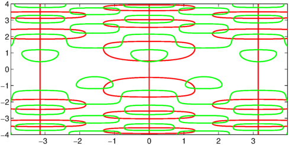
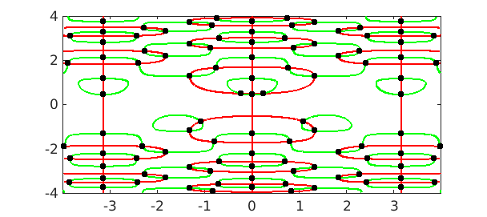
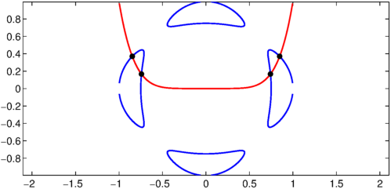
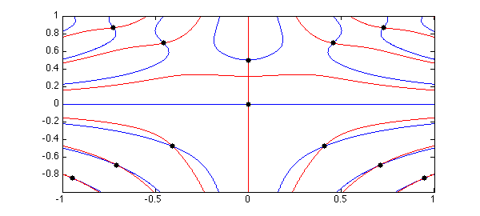

In Chebfun2 we would like to be able to find the roots of a bivariate polynomial system. That is, find $(x,y)$ such that
$$ F(x,y) = ( f(x,y),\ g(x,y) ) = 0. $$
A suggestion by John Boyd of the University of Michigan for finding the zeros of a system of polynomials goes by the name of Marching Triangles [5]. This works by determining the zero contours of $f$ and $g$ separately, and to achieve this the algorithm subdivides the domain many small triangles. On each triangle it approximates $f$ (or $g$) by a piecewise linear polynomial, and there are two possible cases:
-
The values of the function at the vertices are all of the same sign.
-
One function value is of a different sign to the others.
If (1) holds then the triangle is marked as not containing a zero contour. If (2) holds, then a linear polynomial $p(x) = ax + by + c$ is formed which interpolates the three vertices and the zero contour of $f$ in that triangle is approximated by the zero line of $p(x)$. Further subdivision is taken in triangles which are deemed to contain a zero contour.
The MATLAB command contourc uses Marching Squares [4], a similar technique using subdivision with squares instead of triangles. This algorithm is employed by contour, contours and contourf and implemented in contourc. One of the Chebfun Examples is based on the contourc command [1].
The Chebfun2 roots command uses the MATLAB contourc command to find the zero contours of a single function $f(x,y)$.
Zero contours
Let's solve a problem from [2] of finding the solution to $f(x,y) = g(x,y) = 0$:
d = [-4 4 -4 4]; f = chebfun2(@(x,y) 2*y.*cos(y.^2).*cos(2*x)-cos(y),d); g = chebfun2(@(x,y) 2*sin(y.^2).*sin(2*x)-sin(x),d);
This example was derived from an autonomous system of ODEs. Here are the zero contours computed by Marching Squares.
LW = 'linewidth'; lw = 1.6; MS = 'markersize'; plot(roots(g),'r',LW,lw), hold on, plot(roots(f),'g',LW,lw)

Solutions to bivariate systems
A different problem is to find the isolated solutions to a bivariate system $f(x,y) = g(x,y) = 0$. The Chebfun2 command roots(f,g) solves this problem by first computing the zero contours of $f$ and $g$ by marching squares, and then using their intersections as initial guesses in a Newton iteration.
For example we can find all the solutions to the example above with the following code:
r = roots([f;g],'ms'); plot(r(:,1),r(:,2),'.k',MS,20), hold off

(Note: The roots command in Chebfun2 uses two different algorithms, one based on a hidden variable resultant method and the other on Marching Squares. The 'ms' flag ensures that the Marching Squares algorithm is employed. For more information type help chebfun2v/roots.m.)
Trott's curve
Trott's curve an important curve in algebraic geometry. Here we use the command roots(f,g) to compute the intersections between this curve and the zero contours of $f(x,y) = y-x^6$.
trott = @(x,y) 144*(x.^4+y.^4)-225*(x.^2+y.^2) + 350*x.^2.*y.^2+81; f = chebfun2(trott); g = chebfun2(@(x,y) y-x.^6); plot(roots(f),'b',LW,lw), hold on, plot(roots(g),'r',LW,lw), axis equal r = roots([f;g],'ms'); plot(r(:,1),r(:,2),'k.',MS,20), hold off

A function with several local minima
The roots command in Chebfun2 can also be used to compute the local extrema of a function $f(x,y)$ because they satisfy $df/dx = df/dy = 0$.
f = chebfun2(@(x,y) (x.^2-y.^3+1/8).*sin(10*x.*y)); r = roots(gradient(f),'ms'); % critical points plot(roots(diff(f,1,2)),'b',LW,lw) % plot zero contours of f_x hold on, plot(roots(diff(f)),'r',LW,lw) % plot zero contours of f_y plot(r(:,1),r(:,2),'k.',MS,20) % plot extrema

Note that we have used the Chebfun2 gradient command, which computes the $x$ and $y$ derivatives of $f$.
More information
The last example can also be found in [3] along with additional information about the rootfinding algorithm in Chebfun2.
References
-
Chebfun Example fun/ContourFun
-
C. S. Coleman, Gulp!, CODEE Newsletter, 1995.
-
A. Townsend and L. N. Trefethen, An extension of Chebfun to two dimensions, SIAM Journal on Scientific Computing, 35 (2013), C495-C518.
-
Marching Squares, Wikipedia article, http://en.wikipedia.org/wiki/Marching_squares
-
Marching Triangles, Wikipedia article, http://en.wikipedia.org/wiki/Marching_triangles